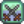

Cuarzo refinado
Ir a la navegación
Ir a la búsqueda
| Cuarzo refinado | |
| Cuarzo en estado más puro. | |
| Información | |
| Origen | Horno |
| Precio de venta | |
| Fabricación | |
| Máquina | |
| Tiempo de artesanía | |
| Ingredientes | |
El Cuarzo refinado se puede crear en el horno fundiendo 1 Cuarzo y 1 pieza de carbón. Se puede vender por  50o. Hasta obtener el Cristalario, es mucho más fácil y rápido de obtener Cuarzo refinado a través de la Máquina recicladora.
50o. Hasta obtener el Cristalario, es mucho más fácil y rápido de obtener Cuarzo refinado a través de la Máquina recicladora.
Localización
- Se puede encontrar en Geodas
- Se puede encontrar en Las minas dentro de las rocas de cristal.
- Se puede crear fundiendo Cuarzo y 1 pieza de carbón en el horno. Tarda 1,5 horas.
- Igualmente se puede fundir Cuarzo de fuego salvo que este dará 3 ejemplares.
- Se puede obtener reciclando un CD roto o unas gafas rotas.
Elaboración
El Cuarzo refinado se utiliza para fabricar los siguientes objetos:
| Imagen | Nombre | Descripción | Ingredientes | Receta de |
|---|---|---|---|---|
| Anillo resistente | Reduce la duración de estados alterados a la mitad. |
|
 Combate 1 | |
| Camino de cristal | Colócalo para crear caminos o adornar tus suelos. | |||
| Suelo de cristal | Colócalo para crear caminos o adornar tus suelos. | |||
| Pararrayos | Acumula energía de las tormentas eléctricas y la convierte en pilas. |
|
||
| Aspersor de calidad | Riega las 8 casillas adyacentes cada mañana. |
|
||
| Ordenador de la granja | Proporciona información importante de la granja. | |||
| Corcho sónar | Muestra qué peces se encuentran en la línea antes de ser atrapados. |
Edificios
| Imagen | Nombre | Descripción | Coste | Tamaño |
|---|---|---|---|---|
 |
Criadero de babas | Cría hasta 20 babas. Llena los abrevaderos y las babas crearán bolas de baba. | 11x6 |
Misiones
- El cuarzo refinado puede ser solicitado en las misiones "necesito ayuda" del tablón de anuncios de la Tienda local Pierre's en cualquier momento del año, con una recompensa de
 150o y 150 puntos de amistad. El cuarzo refinado nunca será solicitado si el jugador no ha obtenido los planos del horno.
150o y 150 puntos de amistad. El cuarzo refinado nunca será solicitado si el jugador no ha obtenido los planos del horno. - Dos, tres, cinco o diez Cuarzos refinados pueden ser solicitados en las misiones del estanque de peces.
Regalos
| Reacciones de Aldeanos
| |
|---|---|
| Neutral | |
| No le gusta | |
| Odia | |
Fundución
Para fundir el Cuarzo refinado, debes introducirlo en el horno junto con una pieza de carbón.
| Mineral | Producción | Tiempo de fundición |
|---|---|---|
| Recursos | |
|---|---|
| Básico | Arcilla • Carbón • Fibra vegetal • Madera noble • Piedra • Madera • Musgo • Pila |
| Menas | Mena de cobre • Mena de hierro • Mena de oro • Mena de iridio • Mineral radiactivo |
| Lingotes | Lingote de cobre • Lingote de hierro • Lingote de oro • Lingote de iridio • Cuarzo refinado • Lingote radiactivo |